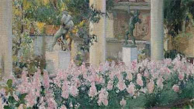

Tue, 27 Mar 2012 00:18:38 PDT
Jessica Lange expone "Secuencias de México" en Madrid.
Jessica Lange expone "Secuencias de México" en Madrid.
La Casa de América, en colaboración con diChroma Photography y gracias a la cortesía de la Howard Greenberg Gallery de Nueva York, presenta, del 31 de marzo al 20 de mayo de 2012, la exposición “Secuencias de México”, de la actriz y fotógrafa estadounidense Jessica Lange, cuya obra se expone por vez primera en Madrid.
La exposición, comisariada por Anne Morin, reúne 96 fotografías de las que 58 son totalmente inéditas y producidas por diChroma photography exclusivamente para esta exposición, entre ellas una secuencia de treinta imágenes que documentan un rito ancestral indio de la región de Chiapas.
Tomadas en México durante los últimos 15 años, las imágenes que componen la muestra relatan mediante secuencias casi cinematográficas viajes y paisajes, siempre entre la luz y la sombra, en el umbral de lo no visto. Se trata de un México que actúa como escenario de lo cotidiano donde -más allá de la evidencia y de lo invisible- aparece la realidad en un doble fondo, y una fascinación por el detalle, lo insignificante y lo imperceptible.
La escritura fotográfica de Jessica Lange resulta singular, personal, inmediata y su retórica, simple y puntual pero generosa. Más que lo que ve, fotografía lo que experimenta, por lo que esas imágenes se convierten, de alguna forma en “equivalencias”. Transmite y transpone primero una emoción que se convierte tanto en el centro como en el objeto de la imagen. La preocupación estética queda pues relegada a un segundo plano, dejando así de ser una cuestión fundamental.
Cercana a la fotografía humanista, Jessica Lange toma prestadas referencias visuales de los grandes nombres de la fotografía del siglo XX, como Henri Cartier Bresson, Manuel Álvarez Bravo o Walker Evans.
Fechas de la exposición: Del 31 de marzo al 20 de mayo de 2012.
De lunes a sábado de 11:00h a 20:00h.
Domingos y festivos de 11:00h a 15:00h.
Sala Frida Khalo.
La Casa de América, en colaboración con diChroma Photography y gracias a la cortesía de la Howard Greenberg Gallery de Nueva York, presenta, del 31 de marzo al 20 de mayo de 2012, la exposición “Secuencias de México”, de la actriz y fotógrafa estadounidense Jessica Lange, cuya obra se expone por vez primera en Madrid.
La exposición, comisariada por Anne Morin, reúne 96 fotografías de las que 58 son totalmente inéditas y producidas por diChroma photography exclusivamente para esta exposición, entre ellas una secuencia de treinta imágenes que documentan un rito ancestral indio de la región de Chiapas.
Tomadas en México durante los últimos 15 años, las imágenes que componen la muestra relatan mediante secuencias casi cinematográficas viajes y paisajes, siempre entre la luz y la sombra, en el umbral de lo no visto. Se trata de un México que actúa como escenario de lo cotidiano donde -más allá de la evidencia y de lo invisible- aparece la realidad en un doble fondo, y una fascinación por el detalle, lo insignificante y lo imperceptible.
La escritura fotográfica de Jessica Lange resulta singular, personal, inmediata y su retórica, simple y puntual pero generosa. Más que lo que ve, fotografía lo que experimenta, por lo que esas imágenes se convierten, de alguna forma en “equivalencias”. Transmite y transpone primero una emoción que se convierte tanto en el centro como en el objeto de la imagen. La preocupación estética queda pues relegada a un segundo plano, dejando así de ser una cuestión fundamental.
Cercana a la fotografía humanista, Jessica Lange toma prestadas referencias visuales de los grandes nombres de la fotografía del siglo XX, como Henri Cartier Bresson, Manuel Álvarez Bravo o Walker Evans.
Fechas de la exposición: Del 31 de marzo al 20 de mayo de 2012.
De lunes a sábado de 11:00h a 20:00h.
Domingos y festivos de 11:00h a 15:00h.
Sala Frida Khalo.
Fri, 23 Mar 2012 01:16:54 PDT
Exposición Fotográfica "Bomberos" en la Sala Mejía Lequerica.
Exposición Fotográfica "Bomberos" en la Sala Mejía Lequerica.
El Albergue Juvenil de Madrid, en colaboración con la Fundación Sophia, acoge del 20 de marzo hasta el 22 de abril, la exposición fotográfica “Bomberos”, en la sala de exposiciones en la calle Mejía Lequerica 21 (Metro Tribunal – Bilbao). La muestra puede verse de lunes a viernes, de 10 a 20h y sábados de 10 a 14h. La entrada es libre. www.fundacionsophia.com -
“Bomberos” es fruto de la curiosidad de este fotógrafo por conocer de cerca este oficio y los que a él se dedican en cuerpo y alma, más allá de los estereotípos y de los tópicos imperantes. Sobre todo, Jesús Calero busca ahondar en cada uno de esos personajes, esos héroes silenciosos cuyo trabajo diario es poner las emergencia y necesidades de los demás por encima de ellos mismos.
Unas treinta imágenes ilustran la diversidad de los que se dedican a este oficio, que atraídos por una genuina vocación de servicio público, se presentan diariamente a sus puestos de trabajo como cualquier otro ciudadano, con la con la diferencia de que una de sus labores es enfrentarse al peligro en muchas de sus intervenciones.
“Con esta exposición comparto mi visión particular acerca de este colectivo”, explicó Jesús Calero acerca de su exposición. “Quedé sorprendido al ver reflejado en este cuerpo la diversidad cultural de nuestra sociedad”, agregó el fotógrafo, que retrató a los integrantes de varios parques de bomberos en la Comunidad de Madrid.
“Esta exposición forma parte de nuestro programa de mecenazgo MecenArte”, explicó el Dr. Francis J. Vilar, presidente de Fundación Sophia. “A través de esta iniciativa, apoyamos y damos a conocer el trabajo de artistas nobeles, en las distintas ramas de las artes plásticas”, agregó.
La muestra fue inaugurada el 20 de marzo con la presencia del fotógrafo y autor de la exposición, Jesús Calero y el responsable de comunicación de Fundación Sophia, Sergio G. García. "Bomberos" permanecerá abierta hasta el 22 de abril, de lunes a viernes, de 10 a 20h y sábados, de 10 a 14h. La entrada es libre.
Fundación Sophia es una institución de carácter docente, dedicada a la investigación, estudio y difusion del Pensamiento y el Arte de las Civilizaciones antiguas y las Culturas tradicionales. Asimismo, la Fundación Sophia dirige gran parte de sus esfuerzos hacia el mecenazco de filósofos, artistas e investigadores en el ámbito de Humanidades, constituyendo, sin lugar a dudas, un abierto punto de encuentro para todos los amantes del Arte, la Filosofía y las Ciencias Humanas en general.
El Albergue Juvenil de Madrid, en colaboración con la Fundación Sophia, acoge del 20 de marzo hasta el 22 de abril, la exposición fotográfica “Bomberos”, en la sala de exposiciones en la calle Mejía Lequerica 21 (Metro Tribunal – Bilbao). La muestra puede verse de lunes a viernes, de 10 a 20h y sábados de 10 a 14h. La entrada es libre. www.fundacionsophia.com -
“Bomberos” es fruto de la curiosidad de este fotógrafo por conocer de cerca este oficio y los que a él se dedican en cuerpo y alma, más allá de los estereotípos y de los tópicos imperantes. Sobre todo, Jesús Calero busca ahondar en cada uno de esos personajes, esos héroes silenciosos cuyo trabajo diario es poner las emergencia y necesidades de los demás por encima de ellos mismos.
Unas treinta imágenes ilustran la diversidad de los que se dedican a este oficio, que atraídos por una genuina vocación de servicio público, se presentan diariamente a sus puestos de trabajo como cualquier otro ciudadano, con la con la diferencia de que una de sus labores es enfrentarse al peligro en muchas de sus intervenciones.
“Con esta exposición comparto mi visión particular acerca de este colectivo”, explicó Jesús Calero acerca de su exposición. “Quedé sorprendido al ver reflejado en este cuerpo la diversidad cultural de nuestra sociedad”, agregó el fotógrafo, que retrató a los integrantes de varios parques de bomberos en la Comunidad de Madrid.
“Esta exposición forma parte de nuestro programa de mecenazgo MecenArte”, explicó el Dr. Francis J. Vilar, presidente de Fundación Sophia. “A través de esta iniciativa, apoyamos y damos a conocer el trabajo de artistas nobeles, en las distintas ramas de las artes plásticas”, agregó.
La muestra fue inaugurada el 20 de marzo con la presencia del fotógrafo y autor de la exposición, Jesús Calero y el responsable de comunicación de Fundación Sophia, Sergio G. García. "Bomberos" permanecerá abierta hasta el 22 de abril, de lunes a viernes, de 10 a 20h y sábados, de 10 a 14h. La entrada es libre.
Fundación Sophia es una institución de carácter docente, dedicada a la investigación, estudio y difusion del Pensamiento y el Arte de las Civilizaciones antiguas y las Culturas tradicionales. Asimismo, la Fundación Sophia dirige gran parte de sus esfuerzos hacia el mecenazco de filósofos, artistas e investigadores en el ámbito de Humanidades, constituyendo, sin lugar a dudas, un abierto punto de encuentro para todos los amantes del Arte, la Filosofía y las Ciencias Humanas en general.
Tue, 20 Mar 2012 01:30:15 PDT
Odilon Redon en la Fundación Mapfre.
Odilon Redon en la Fundación Mapfre.
A través de 170 obras procedentes de distintas instituciones, que comprenden óleos, dibujos, grabados, paneles decorativos y bocetos textiles, la muestra recorre la trayectoria artística y el universo singular de Redon.
Se trata de la primera exposición monográfica organizada en España en 20 años del pintor francés, precursor del simbolismo y del grupo de los Nabis.
El estilo personal, con un uso novedoso del color y las tonalidades, y una temática basada en las complejidades del pensamiento, lo esotérico y los mecanismos del sueño, fueron lo que hicieron que Redon influyera profundamente en las generaciones simbolistas, fauvistas y Nabis, convirtiéndose en uno de los pintores más destacados de la segunda mitad del siglo XIX y principios del XX.
La exposición está comisariada por Rodolphe Rapetti, investigador del Institut National d'Historie de l'Art de París, y cuenta con la asesoría científica de Fred Leeman, ambos reconocidos expertos de la obra de Odilon Redon.
Entre las instituciones que han colaborado con esta muestra destaca el Musée d'Orsay, el Gemeentemuseum de La Haya, el Museo Van Gogh y el Rijksmuseum de Ámsterdam, el Museo de Bellas Artes de Burdeos y el Staatliche Kunsthalle de Karlsruhe, así como de importantes colecciones extranjeras.
Fecha de inicio: 11/02/2012
Fecha de fin: 29/04/2012
Local: Fundación Mapfre. Sala Recoletos
Venta de entradas: Entrada libre
Horarios: Lunes de 14:00 a 20:00 h; martes a sábados de 10:00 a 20:00 h; domingos y festivos de 12:00 a 20:00 h.
A través de 170 obras procedentes de distintas instituciones, que comprenden óleos, dibujos, grabados, paneles decorativos y bocetos textiles, la muestra recorre la trayectoria artística y el universo singular de Redon.
Se trata de la primera exposición monográfica organizada en España en 20 años del pintor francés, precursor del simbolismo y del grupo de los Nabis.
El estilo personal, con un uso novedoso del color y las tonalidades, y una temática basada en las complejidades del pensamiento, lo esotérico y los mecanismos del sueño, fueron lo que hicieron que Redon influyera profundamente en las generaciones simbolistas, fauvistas y Nabis, convirtiéndose en uno de los pintores más destacados de la segunda mitad del siglo XIX y principios del XX.
La exposición está comisariada por Rodolphe Rapetti, investigador del Institut National d'Historie de l'Art de París, y cuenta con la asesoría científica de Fred Leeman, ambos reconocidos expertos de la obra de Odilon Redon.
Entre las instituciones que han colaborado con esta muestra destaca el Musée d'Orsay, el Gemeentemuseum de La Haya, el Museo Van Gogh y el Rijksmuseum de Ámsterdam, el Museo de Bellas Artes de Burdeos y el Staatliche Kunsthalle de Karlsruhe, así como de importantes colecciones extranjeras.
Fecha de inicio: 11/02/2012
Fecha de fin: 29/04/2012
Local: Fundación Mapfre. Sala Recoletos
Venta de entradas: Entrada libre
Horarios: Lunes de 14:00 a 20:00 h; martes a sábados de 10:00 a 20:00 h; domingos y festivos de 12:00 a 20:00 h.
Sun, 18 Mar 2012 08:06:44 PDT
Madrid-Barajas acoge la muestra fotográfica ‘APMIB, 20 años de actividad deportiva.
Madrid-Barajas acoge la muestra fotográfica ‘APMIB, 20 años de actividad deportiva.
El Aeropuerto de Madrid-Barajas en colaboración con APMIB, Asociación de Empleados de Iberia Padres de Minusválidos, acoge desde hoy en sus instalaciones la exposición fotográfica ‘APMIB, 20 años de actividad deportiva’.La muestra recoge, a modo de memoria gráfica, una colección de fotografías distribuidas en 10 paneles, cada uno de ellos representativo de un valor: Esfuerzo, ilusión, compromiso, valor de equipo… Las imágenes reflejan “muchos de los momentos vividos con intensidad por un gran número de capacitados deportistas”.Con esta exposición, patrocinada por Maitours, la APIMB quiere celebrar “los 20 años en los que esta asociación ha creído en el deporte como instrumento para conseguir una total integración de las personas con discapacidad a través de la actividad física, y hacer conocedora de ello a la opinión pública”.Al acto de inauguración, celebrado esta mañana en el Aeropuerto, han asistido el director del Aeropuerto, Miguel Ángel Oleaga, quien ha destacado “el importante mensaje que transmite a la sociedad una exposición de estas características”; el presidente de APMIB, José Antonio Quintero Fernández; el director general de la asociación, Pedro Sobrino Cuervo, así como distintas personalidades relacionadas con el deporte y la discapacidad, y los portavoces de todas aquellas empresas sin las que esta muestra no habría sido posible.Entre otros, estaban presentes Gaizka Ortúzar, presidente de Special Olympics España; Ángel Trejo, presidente de Special Olympics Madrid; Roberto Cruzado, responsable de área social de la Fundación del Real Madrid, o Ángel Díaz Pont, presidente del Club Iberia.La muestra, situada en el pasillo que da acceso a la Terminal T2 del Aeropuerto desde el Metro y el Parking P2, podrá ser disfrutada por pasajeros y visitantes hasta el 15 de abril. Tras su paso por el Aeropuerto de Madrid-Barajas la exposición viajará posteriormente a los aeropuertos de aquellas ciudades en las que tiene sede la APMIB.
El Aeropuerto de Madrid-Barajas en colaboración con APMIB, Asociación de Empleados de Iberia Padres de Minusválidos, acoge desde hoy en sus instalaciones la exposición fotográfica ‘APMIB, 20 años de actividad deportiva’.
La muestra recoge, a modo de memoria gráfica, una colección de fotografías distribuidas en 10 paneles, cada uno de ellos representativo de un valor: Esfuerzo, ilusión, compromiso, valor de equipo… Las imágenes reflejan “muchos de los momentos vividos con intensidad por un gran número de capacitados deportistas”.
Con esta exposición, patrocinada por Maitours, la APIMB quiere celebrar “los 20 años en los que esta asociación ha creído en el deporte como instrumento para conseguir una total integración de las personas con discapacidad a través de la actividad física, y hacer conocedora de ello a la opinión pública”.
Al acto de inauguración, celebrado esta mañana en el Aeropuerto, han asistido el director del Aeropuerto, Miguel Ángel Oleaga, quien ha destacado “el importante mensaje que transmite a la sociedad una exposición de estas características”; el presidente de APMIB, José Antonio Quintero Fernández; el director general de la asociación, Pedro Sobrino Cuervo, así como distintas personalidades relacionadas con el deporte y la discapacidad, y los portavoces de todas aquellas empresas sin las que esta muestra no habría sido posible.
Entre otros, estaban presentes Gaizka Ortúzar, presidente de Special Olympics España; Ángel Trejo, presidente de Special Olympics Madrid; Roberto Cruzado, responsable de área social de la Fundación del Real Madrid, o Ángel Díaz Pont, presidente del Club Iberia.
La muestra, situada en el pasillo que da acceso a la Terminal T2 del Aeropuerto desde el Metro y el Parking P2, podrá ser disfrutada por pasajeros y visitantes hasta el 15 de abril. Tras su paso por el Aeropuerto de Madrid-Barajas la exposición viajará posteriormente a los aeropuertos de aquellas ciudades en las que tiene sede la APMIB.
Fri, 16 Mar 2012 14:50:43 PDT
Los mejores aeropuertos de 2011.
Los mejores aeropuertos de 2011.
Os dejamos este informe sobre los mejores aeropuertos de 2011. Los resultados son extraídos de miles de opiniones sobre aeropuertos a los que nuestros clientes viajaron el pasado año. Para cada uno valoraron diversos aspectos importantes, como la conectividad con la ciudad a través de autobús, tren, metro, taxi, coches de alquiler, así como la disponibilidad de salas de espera, tiendas, restaurantes o bares entre otros servicios. El aeropuerto Incheon International de Seúl se convierte en el ganador global con una puntuación de 4,80 sobre 5. Muchos clientes dijeron que es un aeropuerto con numerosas instalaciones de entretenimiento: un spa, un museo, un taller de artesanía tradicional coreana, varias tiendas y restaurantes típicos coreanos a precios asequibles, entre muchos otros servicios. Otros viajeros dijeron que en su experiencia personal encontraron muy útil la disponibilidad de las duchas gratuitas así como Internet Wifi en todas las instalaciones.Informe completo en http://www.edreams.es/vuelos/aeropuertos/mejores-aeropuertos/
Os dejamos este informe sobre los mejores aeropuertos de 2011. Los resultados son extraídos de miles de opiniones sobre aeropuertos a los que nuestros clientes viajaron el pasado año. Para cada uno valoraron diversos aspectos importantes, como la conectividad con la ciudad a través de autobús, tren, metro, taxi, coches de alquiler, así como la disponibilidad de salas de espera, tiendas, restaurantes o bares entre otros servicios.
El aeropuerto Incheon International de Seúl se convierte en el ganador global con una puntuación de 4,80 sobre 5. Muchos clientes dijeron que es un aeropuerto con numerosas instalaciones de entretenimiento: un spa, un museo, un taller de artesanía tradicional coreana, varias tiendas y restaurantes típicos coreanos a precios asequibles, entre muchos otros servicios. Otros viajeros dijeron que en su experiencia personal encontraron muy útil la disponibilidad de las duchas gratuitas así como Internet Wifi en todas las instalaciones.
Informe completo en http://www.edreams.es/vuelos/aeropuertos/mejores-aeropuertos/
Thu, 15 Mar 2012 01:13:26 PDT
La exposición fotográfica 'Hollywood en Madrid' muestra el glamour de las estrellas
La exposición fotográfica 'Hollywood en Madrid' muestra el glamour de las estrellas
El artista Enrique del Pozo, fallecido en 2010, firma las fotografías de 'Hollywood en Madrid' llega a la galería Espacio Cultural Excelencias de la capital (c/Magdalena, 8) para dar a conocer el glamour de las estrellas de las décadas 50, 60 y 70.
Por su estudio de la Gran Vía pasaron las grandes estrellas del cine nacional e internacional y muchos de los personajes de la sociedad mundial.
Ava Gardner, Frank Sinatra, Brigitte Bardot, Deborah Kerr, Cary Grant, Gary Cooper , Elizabeth Taylor, Richard Burton, entre otros, fueron sus modelos de lujo y posaban sin reparo ante uno de los mejores fotógrafos del momento.
El artista Enrique del Pozo, fallecido en 2010, firma las fotografías de 'Hollywood en Madrid' llega a la galería Espacio Cultural Excelencias de la capital (c/Magdalena, 8) para dar a conocer el glamour de las estrellas de las décadas 50, 60 y 70.
Por su estudio de la Gran Vía pasaron las grandes estrellas del cine nacional e internacional y muchos de los personajes de la sociedad mundial.
Ava Gardner, Frank Sinatra, Brigitte Bardot, Deborah Kerr, Cary Grant, Gary Cooper , Elizabeth Taylor, Richard Burton, entre otros, fueron sus modelos de lujo y posaban sin reparo ante uno de los mejores fotógrafos del momento.
Wed, 14 Mar 2012 01:05:21 PDT
Inauguración de la exposición de Yolanda Marchante Serra en Vía Appia.
Inauguración de la exposición de Yolanda Marchante Serra en Vía Appia.
Exposición de la pintora Yolanda Marchante Serra, en el restaurante “Vía Appia”
“Vía Appia”
c/ Unión 10, Madrid (entrada por c/ Vergara, frente al Teatro Real)
Metro: ÓperaInauguración con cóctel: el miércoles 14 de Marzo a las 20:00
Exposición de la pintora
Yolanda Marchante Serra, en el restaurante “Vía Appia”
“Vía Appia”
c/ Unión 10, Madrid (entrada por c/ Vergara, frente al Teatro Real)
Metro: Ópera
Inauguración con cóctel: el miércoles 14 de Marzo a las 20:00
Fri, 09 Mar 2012 01:54:50 PST
"Japón, contrastes" de Lluis Vinagre.
"Japón, contrastes" de Lluis Vinagre.
Durante el mes de marzo Lluis Vinagre va a exponer una pequeña muestra de fotografías de Japón bajo el título "Japón, contrastes" en el restaurante japonés yataki. con motivo del primer aniversario del gran terremoto del este en la región de tohoku, tengo intención de ingresar el 100% de las ventas que puedan producirse de las fotografías en exposición a la cuenta habilitada por la embajada de Japón en apoyo a los damnificados de la tragedia. Restaurante YatakiC/ Antonio Pérez 26Madrid
Durante el mes de marzo Lluis Vinagre va a exponer una pequeña muestra de fotografías de Japón bajo el título "Japón, contrastes" en el restaurante japonés yataki. con motivo del primer aniversario del gran terremoto del este en la región de tohoku, tengo intención de ingresar el 100% de las ventas que puedan producirse de las fotografías en exposición a la cuenta habilitada por la embajada de Japón en apoyo a los damnificados de la tragedia.
Restaurante Yataki
C/ Antonio Pérez 26
Madrid
Thu, 08 Mar 2012 06:13:02 PST
Noa Lidor en el I Festival Miradas de Mujeres.
Noa Lidor en el I Festival Miradas de Mujeres.
La artista israelí Noa Lidor, Premio de Dibujo Museo ABC, participa con su exposición "Tomás el incrédulo" en el I Festival Miradas de Mujeres, que se inaugura mañana jueves 8 de marzo. La muestra estará abierta al público en la sede del Museo (Amaniel 29-31) hasta el próximo 18 de marzo.
Por primera vez, Lidor muestra su obra en un museo español y materiales como el papel, el yeso, la cera o la sal, son magistralmente manipuladas por su mano para escribir y definir -en algunos casos en Braille-, los dibujos, esculturas e instalaciones que componen la muestra "Tomás, el incrédulo" (como un tanque hecho con dedales traídos de Oriente Medio, un poema escrito con sal...). Objetos cotidianos como dedales, campanas metálicas o pilas de tapetes tejidos a mano verán alterados sus usos previstos, con el objetivo de encontrar una nueva perspectiva y narrativa.
La artista israelí Noa Lidor, Premio de Dibujo Museo ABC, participa con su exposición "Tomás el incrédulo" en el I Festival Miradas de Mujeres, que se inaugura mañana jueves 8 de marzo. La muestra estará abierta al público en la sede del Museo (Amaniel 29-31) hasta el próximo 18 de marzo.
Por primera vez, Lidor muestra su obra en un museo español y materiales como el papel, el yeso, la cera o la sal, son magistralmente manipuladas por su mano para escribir y definir -en algunos casos en Braille-, los dibujos, esculturas e instalaciones que componen la muestra "Tomás, el incrédulo" (como un tanque hecho con dedales traídos de Oriente Medio, un poema escrito con sal...). Objetos cotidianos como dedales, campanas metálicas o pilas de tapetes tejidos a mano verán alterados sus usos previstos, con el objetivo de encontrar una nueva perspectiva y narrativa.
Thu, 08 Mar 2012 02:18:44 PST
Arquitecturas luminosas en el I Festival Miradas de Mujeres.
Arquitecturas luminosas en el I Festival Miradas de Mujeres.
La artista madrileña Esther Pizarro participa con su exposición "Prótesis Domésticas" en el I Festival Miradas de Mujeres, que se inaugura mañana jueves 8 de marzo. La muestra estará abierta al público en la Galería Raquel Ponce (Alameda 3, Madrid) hasta el 5 de abril.La moderna metrópoli vuelve a ser el hilo conductor en sus creaciones pero con una novedad: es el entorno doméstico lo que es cuestionado. Elementos familiares, -una estantería, una cuna,...- son invadidos por arquitecturas luminosas. Provocan sorpresa, cuestionan nuestra forma de vivir. En este nuevo trabajo, el metacrilato y la luz se funden creando un impacto en el espectador.Con obra en los principales museos y colecciones de España, Esther Pizarro (1967) es representante de una nueva generación de artistas que se resisten a abandonar la escultura como medio de expresión. La artista madrileña compagina su trabajo escultórico y proyectos de gran escala, con labores de docencia en la universidad.
La artista madrileña Esther Pizarro participa con su exposición "Prótesis Domésticas" en el I Festival Miradas de Mujeres, que se inaugura mañana jueves 8 de marzo. La muestra estará abierta al público en la Galería Raquel Ponce (Alameda 3, Madrid) hasta el 5 de abril.
La moderna metrópoli vuelve a ser el hilo conductor en sus creaciones pero con una novedad: es el entorno doméstico lo que es cuestionado. Elementos familiares, -una estantería, una cuna,...- son invadidos por arquitecturas luminosas. Provocan sorpresa, cuestionan nuestra forma de vivir. En este nuevo trabajo, el metacrilato y la luz se funden creando un impacto en el espectador.
Con obra en los principales museos y colecciones de España, Esther Pizarro (1967) es representante de una nueva generación de artistas que se resisten a abandonar la escultura como medio de expresión. La artista madrileña compagina su trabajo escultórico y proyectos de gran escala, con labores de docencia en la universidad.
Thu, 08 Mar 2012 00:22:03 PST
Exposiciones en EFTI Escuela de Fotografía.
Exposiciones en EFTI Escuela de Fotografía.
Foto: Agustín López Bedoya
Juan Aballe "42nd Street". Un paseo en mitad de la vorágine, del caos de la gran ciudad?, una evasión hacia un paraíso donde el aislamiento y la singularidad aún son posibles.
Quico Garcia "En las manos de Dios", un trabajo que nos habla del África, en donde más de medio millón de mujeres fallece cada año al traer al mundo un bebé. Sin quejas, ni anestesias que calmen el dolor al que quizás se acostumbraron por un sexo que las marca como víctimas de una sociedad pensada para los hombres.
Mikel Bastida "Displaced Consciousness". Un mundo ficticio, ajeno al cambio. Un parapeto de cartón-piedra creado a medida de unos personajes que suplen las carencias de una realidad insuficiente.En Espacio Off presentamos los dos últimos trabajos del fotógrafo Agustin López Bedoya: "Vida suspendida "y "Adosados". Ambos trabajos forman parte de una estrategia personal (consciente o inconsciente) del autor que utiliza la fotografía para poner en orden su mundo, sus espacios y sus emociones, con el objetivo de redibujar el mapa que le define y a través de estos ajustes proyectarse con plena consciencia en el universo personal en el que vive.

Foto: Agustín López Bedoya
Juan Aballe "42nd Street". Un paseo en mitad de la vorágine, del caos de la gran ciudad?, una evasión hacia un paraíso donde el aislamiento y la singularidad aún son posibles.
Quico Garcia "En las manos de Dios", un trabajo que nos habla del África, en donde más de medio millón de mujeres fallece cada año al traer al mundo un bebé. Sin quejas, ni anestesias que calmen el dolor al que quizás se acostumbraron por un sexo que las marca como víctimas de una sociedad pensada para los hombres.
Mikel Bastida "Displaced Consciousness". Un mundo ficticio, ajeno al cambio. Un parapeto de cartón-piedra creado a medida de unos personajes que suplen las carencias de una realidad insuficiente.
En Espacio Off presentamos los dos últimos trabajos del fotógrafo Agustin López Bedoya: "Vida suspendida "y "Adosados". Ambos trabajos forman parte de una estrategia personal (consciente o inconsciente) del autor que utiliza la fotografía para poner en orden su mundo, sus espacios y sus emociones, con el objetivo de redibujar el mapa que le define y a través de estos ajustes proyectarse con plena consciencia en el universo personal en el que vive.
Tue, 06 Mar 2012 01:12:45 PST
"Historias sugeridas" de la fotógrafa Angélica Suela en Ultravioleta.
"Historias sugeridas" de la fotógrafa Angélica Suela en Ultravioleta.
La sala de exposiciones Hall UV de Ultravioleta Escuela (C/ Cavanilles, 21. Madrid) inaugura el día jueves, 1 de marzo de 2012 su 40ª exposición; "Historias sugeridas" de la fotógrafa Angélica Suela de la LLave.Historias sugeridas es una serie iniciada en 2010 y sobre la que Angélica sigue trabajando en la actualidad.A modo de story board, presenta una secuencia de imágenes que sugieren una historia, pero es el espectador el que la debe construir e interpretar.Cada elemento de esta serie no es una fotografía sino un conjunto de ellas. Son secuencias creadas después de la toma, como resultado de la libre asociación de imágenes. Las historias no tienen título. Los elementos que utiliza para “sugerir”, proceden de la atmósfera de la propia fotografía y del título descriptivo que acompaña cada imagen."Historias sugeridas" de Angélica Suela de la LLave.del 1 de marzo al 4 de abril de 2012. Entrada libre.
La sala de exposiciones Hall UV de Ultravioleta Escuela (C/ Cavanilles, 21. Madrid) inaugura el día jueves, 1 de marzo de 2012 su 40ª exposición; "Historias sugeridas" de la fotógrafa Angélica Suela de la LLave.
Historias sugeridas es una serie iniciada en 2010 y sobre la que Angélica sigue trabajando en la actualidad.
A modo de story board, presenta una secuencia de imágenes que sugieren una historia, pero es el espectador el que la debe construir e interpretar.
Cada elemento de esta serie no es una fotografía sino un conjunto de ellas. Son secuencias creadas después de la toma, como resultado de la libre asociación de imágenes. Las historias no tienen título. Los elementos que utiliza para “sugerir”, proceden de la atmósfera de la propia fotografía y del título descriptivo que acompaña cada imagen.
"Historias sugeridas" de Angélica Suela de la LLave.
del 1 de marzo al 4 de abril de 2012. Entrada libre.
Fri, 02 Mar 2012 06:26:07 PST
¿Por qué me gusta el teatro? Burundanga.
¿Por qué me gusta el teatro? Burundanga.
Quien quiera reírse sin para, quien quiera pasar un rato divertido y olvidarse de sus problemas, quien quiera disfrutar del teatro, que no dude en ir a ver Burundanga en el Teatro Maravillas. Excepcional actuación de Marta Poveda (algunos la recordaréis de cuando salía en la televisión en "Escenas de matrimonio"), alma de esta obra de teatro que da una clase de interpretación difícil de olvidar.La obra es una comedia de Jordi Galcerán (“El método Gronholm”) que nos habla sobre una joven pareja de enamorados. Ella quiere saber todo sobre él pero no se atreve a preguntar. Su mejor amiga le ofrece una dosis del suero de la verdad: Burundanga. ¿La quiere? ¿Es él quien aparenta ser? ¿Es honrado, fiel y trabajador? ¿Y si oculta los peores secretos? ¿Y si no es lo que parece? ¿Es infiel? ¿Es un delincuente? ¿Y si fuera un terrorista?Sinopsis:Berta, una joven estudiante, está embarazada de Manel, su novio, pero todavía no se ha atrevido a decírselo.Y es que no sabe qué hacer. Por no saber, no sabe ni si su novio realmente la quiere.Silvia, su compañera de piso, le ofrece la solución: burundanga, la droga de la verdad, una sustancia que hace perder la voluntad a quien la toma y provoca la sinceridad más auténtica.Si se la administra a Manel podrá saber la verdad sobre todo aquello que desee. Y Berta lo hace, le da la droga a su novio y descubre no sólo lo que pretendía averiguar si no otra verdad mucho más inesperada que hace estallar un enredo de consecuencias imprevisibles.El Teatro Maravillas está en la calle Manuela Malasaña, cerca de las paradas de metro de Tribunal y Bilbao. Es una estupenda opción para ir con amigos o con tu pareja, no con niños. ¿Tienes un plan mejor para este fin de semana?Reparto:
Eloy Arenas, Mar Abascal,
Marta Poveda, Antonio Hortelano, César Camino.Director: Gabriel OlivaresAutor: Jordi Galcerán
Quien quiera reírse sin para, quien quiera pasar un rato divertido y olvidarse de sus problemas, quien quiera disfrutar del teatro, que no dude en ir a ver Burundanga en el Teatro Maravillas. Excepcional actuación de Marta Poveda (algunos la recordaréis de cuando salía en la televisión en "Escenas de matrimonio"), alma de esta obra de teatro que da una clase de interpretación difícil de olvidar.
La obra es una comedia de Jordi Galcerán (“El método Gronholm”) que nos habla sobre una joven pareja de enamorados. Ella quiere saber todo sobre él pero no se atreve a preguntar. Su mejor amiga le ofrece una dosis del suero de la verdad: Burundanga. ¿La quiere? ¿Es él quien aparenta ser? ¿Es honrado, fiel y trabajador? ¿Y si oculta los peores secretos? ¿Y si no es lo que parece? ¿Es infiel? ¿Es un delincuente? ¿Y si fuera un terrorista?
Sinopsis:
Berta, una joven estudiante, está embarazada de Manel, su novio, pero todavía no se ha atrevido a decírselo.Y es que no sabe qué hacer. Por no saber, no sabe ni si su novio realmente la quiere.
Silvia, su compañera de piso, le ofrece la solución: burundanga, la droga de la verdad, una sustancia que hace perder la voluntad a quien la toma y provoca la sinceridad más auténtica.
Si se la administra a Manel podrá saber la verdad sobre todo aquello que desee. Y Berta lo hace, le da la droga a su novio y descubre no sólo lo que pretendía averiguar si no otra verdad mucho más inesperada que hace estallar un enredo de consecuencias imprevisibles.
El Teatro Maravillas está en la calle Manuela Malasaña, cerca de las paradas de metro de Tribunal y Bilbao. Es una estupenda opción para ir con amigos o con tu pareja, no con niños.
¿Tienes un plan mejor para este fin de semana?
Reparto:
Eloy Arenas, Mar Abascal,
Marta Poveda, Antonio Hortelano, César Camino.
Director: Gabriel Olivares
Autor: Jordi Galcerán
Mon, 26 Mar 2012 00:24:55 PDT
Exposición “Ideas a simple vista” del fotógrafo Luis Santamaría.
Exposición “Ideas a simple vista” del fotógrafo Luis Santamaría.
“Ideas a simple vista” del fotógrafo Luis Santamaría
En “Colectivo La Latina”, c/ Luciente 7, Madrid
Inauguración: el miércoles 28 de marzo a las 20:30
“Ideas a simple vista” del fotógrafo Luis Santamaría
En “Colectivo La Latina”, c/ Luciente 7, Madrid
Inauguración: el miércoles 28 de marzo a las 20:30
Wed, 21 Mar 2012 07:13:28 PDT
"Los ballets rusos" en el CaixaForum.
"Los ballets rusos" en el CaixaForum.
Esta exposición recupera la figura de Serguéi Diáguilev (Nóvgorod, 1872 - Venecia, 1929) a través de su compañía de danza, los ballets rusos, sin la cual no podría entenderse la evolución de la danza en el siglo xx. La exposición muestra un recorrido por los escenarios y los acontecimientos más importantes que protagonizó la compañía en sus veinte años de existencia.
Los ballets rusos nacen en París en 1909, de una selección de los mejores bailarines del Ballet Imperial del Teatro Mariinsky de San Petersburgo. En 1911 se independizan del Ballet Imperial y sobreviven por poco tiempo a la muerte de su fundador, en 1929. La compañía viaja a los mejores teatros de la época y llega también a Madrid y Barcelona.
Su éxito proviene de la apuesta por la renovación del lenguaje visual, tanto en la coreografía como en la escenografía, y del lenguaje musical. La característica esencial fue la reducción de la danza al cuerpo humano para expresar historias y emociones, ello explica el desarrollo del virtuosismo de sus bailarines. Artistas visuales de vanguardia de la talla de Matisse, Picasso, Braque, Derain, Goncharova, Laurencien o Chanel participaron en el diseño de vestuarios y escenografías; músicos renovadores como Ravel, Satie, Falla, Stravinsky, Prokófiev, Rimski-Kórsakov; bailarines como Fokine, Nijinsky, Pávlova, Karsavina o Massine, y escritores como Jean Cocteau trabajaron conjuntamente en esta obstinación, animados por Diaghilev.
Los ballets rusos y España
Uno de los ámbitos de la exposición dará a conocer la actividad de los ballets rusos en los escenarios españoles, el enriquecimiento mutuo a partir de sus aportaciones artísticas y culturales y el establecimiento de colaboraciones con creadores españoles que significó la presencia española en el más álgido contexto artístico internacional del primer cuarto de siglo.
Los ballets rusos se refugiaron en España entre 1914 y 1918, los años de la Primera Guerra Mundial, un período en el que resultaba imposible ir de gira por las ciudades y los teatros donde habían triunfado en sus primeros años. Tras pasar seis meses de 1915 en Suiza, donde se reformó la compañía, y hacer una primera gira por Estados Unidos, los ballets rusos se instalaron en España y artistas rusos, franceses y españoles se agruparon alrededor de Diaghilev y su energía creativa. Alfonso XIII respaldó a la compañía permitiendo que actuaran en Madrid y Barcelona y fueran de gira por el país. También los ayudó a regresar a Londres, a unos escenarios donde cosecharon grandes éxitos en 1918 y 1919.
Una vez firmada la paz, la compañía de Diaghilev siguió volviendo a España a actuar, y Barcelona resultó ser un punto de partida idóneo durante la década de 1920 para iniciar las giras después de cerrar las temporadas invernales en Montecarlo. Los artistas españoles fueron cobrando importancia, siguiendo la estela de Josep Maria Sert, el primer no ruso en diseñar un ballet para Diaghilev. Destacan nombres como Juan Gris, Joan Miró, Pedro Pruna y, sobre todo, Pablo Picasso. Todos ellos diseñaron decorados y vestuario y, además, ilustraron la compañía y participaron en programas especiales producidos por los ballets rusos. Compositores (el más destacado fue Manuel de Falla), directores de orquesta y bailarines españoles se incorporaron a la compañía de Diaghilev, y en 1921, por recomendación del empresario británico C. B. Cochran, una troupe de bailarines españoles presentó Cuadro Flamenco en París y Londres.
De lunes a viernes, de 10 a 20 h. Sábados, domingos y festivos, de 10 a 21 h.
Precio: Actividad gratuita
CaixaForum Madrid. Paseo del Prado, 36
28014 MADRID
Esta exposición recupera la figura de Serguéi Diáguilev (Nóvgorod, 1872 - Venecia, 1929) a través de su compañía de danza, los ballets rusos, sin la cual no podría entenderse la evolución de la danza en el siglo xx. La exposición muestra un recorrido por los escenarios y los acontecimientos más importantes que protagonizó la compañía en sus veinte años de existencia.
Los ballets rusos nacen en París en 1909, de una selección de los mejores bailarines del Ballet Imperial del Teatro Mariinsky de San Petersburgo. En 1911 se independizan del Ballet Imperial y sobreviven por poco tiempo a la muerte de su fundador, en 1929. La compañía viaja a los mejores teatros de la época y llega también a Madrid y Barcelona.
Su éxito proviene de la apuesta por la renovación del lenguaje visual, tanto en la coreografía como en la escenografía, y del lenguaje musical. La característica esencial fue la reducción de la danza al cuerpo humano para expresar historias y emociones, ello explica el desarrollo del virtuosismo de sus bailarines. Artistas visuales de vanguardia de la talla de Matisse, Picasso, Braque, Derain, Goncharova, Laurencien o Chanel participaron en el diseño de vestuarios y escenografías; músicos renovadores como Ravel, Satie, Falla, Stravinsky, Prokófiev, Rimski-Kórsakov; bailarines como Fokine, Nijinsky, Pávlova, Karsavina o Massine, y escritores como Jean Cocteau trabajaron conjuntamente en esta obstinación, animados por Diaghilev.
Los ballets rusos y España
Uno de los ámbitos de la exposición dará a conocer la actividad de los ballets rusos en los escenarios españoles, el enriquecimiento mutuo a partir de sus aportaciones artísticas y culturales y el establecimiento de colaboraciones con creadores españoles que significó la presencia española en el más álgido contexto artístico internacional del primer cuarto de siglo.
Los ballets rusos se refugiaron en España entre 1914 y 1918, los años de la Primera Guerra Mundial, un período en el que resultaba imposible ir de gira por las ciudades y los teatros donde habían triunfado en sus primeros años. Tras pasar seis meses de 1915 en Suiza, donde se reformó la compañía, y hacer una primera gira por Estados Unidos, los ballets rusos se instalaron en España y artistas rusos, franceses y españoles se agruparon alrededor de Diaghilev y su energía creativa. Alfonso XIII respaldó a la compañía permitiendo que actuaran en Madrid y Barcelona y fueran de gira por el país. También los ayudó a regresar a Londres, a unos escenarios donde cosecharon grandes éxitos en 1918 y 1919.
Una vez firmada la paz, la compañía de Diaghilev siguió volviendo a España a actuar, y Barcelona resultó ser un punto de partida idóneo durante la década de 1920 para iniciar las giras después de cerrar las temporadas invernales en Montecarlo. Los artistas españoles fueron cobrando importancia, siguiendo la estela de Josep Maria Sert, el primer no ruso en diseñar un ballet para Diaghilev. Destacan nombres como Juan Gris, Joan Miró, Pedro Pruna y, sobre todo, Pablo Picasso. Todos ellos diseñaron decorados y vestuario y, además, ilustraron la compañía y participaron en programas especiales producidos por los ballets rusos. Compositores (el más destacado fue Manuel de Falla), directores de orquesta y bailarines españoles se incorporaron a la compañía de Diaghilev, y en 1921, por recomendación del empresario británico C. B. Cochran, una troupe de bailarines españoles presentó Cuadro Flamenco en París y Londres.
De lunes a viernes, de 10 a 20 h. Sábados, domingos y festivos, de 10 a 21 h.
Precio: Actividad gratuita
CaixaForum Madrid. Paseo del Prado, 36
28014 MADRID
Mon, 19 Mar 2012 00:45:02 PDT
Día del Padre: descuentos en la exposición 'Nasa, la aventura del espacio'.
Día del Padre: descuentos en la exposición 'Nasa, la aventura del espacio'.
La exposición 'Nasa, la aventura del espacio', que se puede ver en el pabellón XII de la Casa de Campo, lanza descuentos por el Día del Padre, como informa el boletín de Madrid Espacios y Congresos.Los organizadores de la muestra han decidido hacer una rebaja en el precio de la entrada a todos los padres que se acerquen acompañados por sus hijos al Pabellón XII. Así, hasta el lunes 19 de marzo la entrada pasará de los 14 euros habituales a tan sólo 8 que normalmente pagan los niños mayores de 7 años.La exposición, situada en la instalación que gestiona Madrid Espacios y Congresos, está dirigida a toda clase de públicos, se divide en seis galerías, cada una de las cuales está perfectamente conectada con la siguiente.En los más 2.500 metros cuadrados de superficie se muestran las voces, palabras e historias de personajes clave en el desarrollo de la exploración espacial moderna a través de réplicas, objetos reales, maquetas y audiovisuales interactivos.
La exposición 'Nasa, la aventura del espacio', que se puede ver en el pabellón XII de la Casa de Campo, lanza descuentos por el Día del Padre, como informa el boletín de Madrid Espacios y Congresos.
Los organizadores de la muestra han decidido hacer una rebaja en el precio de la entrada a todos los padres que se acerquen acompañados por sus hijos al Pabellón XII. Así, hasta el lunes 19 de marzo la entrada pasará de los 14 euros habituales a tan sólo 8 que normalmente pagan los niños mayores de 7 años.
La exposición, situada en la instalación que gestiona Madrid Espacios y Congresos, está dirigida a toda clase de públicos, se divide en seis galerías, cada una de las cuales está perfectamente conectada con la siguiente.
En los más 2.500 metros cuadrados de superficie se muestran las voces, palabras e historias de personajes clave en el desarrollo de la exploración espacial moderna a través de réplicas, objetos reales, maquetas y audiovisuales interactivos.
Sat, 17 Mar 2012 00:37:11 PDT
Exposición de Raquel de Navas Arribas.
Exposición de Raquel de Navas Arribas.
Exposición de la serie de fotografías 'Intimitá' de Raquel de Navas Arribas en el Anticafé, situado en la Calle Unión 2, 2013 Madrid (Zona Ópera). Del 15 de Marzo al 15 de Abril 2012.La fotógrafa madrileña nos presenta en esta ocasión una serie de imágenes que hablan sobre la frágil línea que divide lo privado, lo íntimo, de lo público; transponiendo espacios que, a priori pertenecen al ámbito privado, en situaciones públicas y por otro lado, imágenes e iconos tomados directamente de la publicidad (espacio público por excelencia) que son presentados bajo la perspectiva de una intimidad que es observada, fisgoneada por la mirada del espectador, que actúa como voyeur.
Exposición de la serie de fotografías 'Intimitá' de Raquel de Navas Arribas en el Anticafé, situado en la Calle Unión 2, 2013 Madrid (Zona Ópera). Del 15 de Marzo al 15 de Abril 2012.
La fotógrafa madrileña nos presenta en esta ocasión una serie de imágenes que hablan sobre la frágil línea que divide lo privado, lo íntimo, de lo público; transponiendo espacios que, a priori pertenecen al ámbito privado, en situaciones públicas y por otro lado, imágenes e iconos tomados directamente de la publicidad (espacio público por excelencia) que son presentados bajo la perspectiva de una intimidad que es observada, fisgoneada por la mirada del espectador, que actúa como voyeur.
Fri, 16 Mar 2012 02:25:37 PDT
El Museo Sorolla inaugura una exposición para conocer mejor la figura Clotilde García, mujer y musa del artista.
El Museo Sorolla inaugura una exposición para conocer mejor la figura Clotilde García, mujer y musa del artista.
"Ando cojo, me falta tu sereno juicio y tus apasionados besos. Dios quiera que algún día estas excursiones artísticas las hagamos siempre juntos". Esta confesión forma parte de las misivas que Joaquín Sorolla le enviaba a su mujer y musa, Clotilde García del Castillo. El Museo Sorolla rinde homenaje a Clotilde a través de los dibujos, muchos de ellos inéditos, fotografías, algún desnudo y apuntes al óleo, que el artista valenciano realizó de su modelo favorita.El secretario de Estado de Cultura, José María Lassalle, ha inaugurado este lunes en el Museo Sorolla esta exposición para conocer mejor la figura Clotilde, como compañera, musa y madre, y comprender la relación y el "amor constante", explica Almudena Hernández, conservadora del Museo Sorolla.En total se exhiben 34 lienzos, 15 notas de color, 40 dibujos, 49 fotografías y algunos objetos personales como una camisa de Clotilde, algunas de sus joyas e incluso una pequeña libreta en donde Clotilde recogía las obras vendidas de su marido y el precio alcanzado en 1909.Clotilde y Joaquín se conocieron siendo casi unos niños y vivieron una historia de amor que discurrió en paralelo a los continuos viajes del pintor, la llegada del éxito y su ascenso social."Ella era su administradora, era muy organizada y muy práctica. Siempre le apoyaba y jamás le abrumaba con sus peticiones", explica María Luisa Menéndez Robles, conservadora jefe del Museo Sorolla.Para Menéndez Robles, lo más interesante de esta exposición ha sido poder ver la respuesta de Clotilde a las cartas de Joaquín Sorolla, y ver ese otro "punto de vista" de una mujer dedicada a su hogar a la que no le interesa aparecer en la vida social del artista.LA INTIMIDAD DEL HOGARLa exposición se estructura en cuatro ámbitos: Intimidad, la musa, la mujer del gran artista, y la fundadora del Museo. En esta última etapa se refleja la enfermedad del pintor, su muerte y la donación al Estado y la fundación del Museo, culminación de la historia de amor entre Sorolla y Clotilde.Y en las paredes del Museo Sorolla aparecen importantes retratos de quien fuera su musa o la muestran en la intimidad de la casa, en los gestos espontáneos del juego con los niños, o en los trabajos rutinarios de costura.Menéndez Roble explica que casi todas las piezas de esta exposición proceden de los fondos del museo, a excepción de tres obras, dos de ellas prestadas por colecciones particulares y una procedente del Museo de Bellas Artes de Valencia, 'Clotilde contemplando la Venus de Milo'."Decidí pedir este cuadro al Museo de Bellas Artes porque muestra esa idea de Clotilde como musa", explica Menéndez Roble y recuerda que el Museo Sorolla tiene más de un millar de cuadros y fondos suficientes para hacer más exposiciones sobre el artista.En este sentido, agradece el apoyo del Ministerio de Cultura en la inauguración de esta muestra, pero reconoce "la inercia" del Departamento y sus "dificultades económicas" a la hora de publicitar las exposiciones de un pequeño museo como el Sorolla.No obstante, precisa que el Museo Sorrolla recibió 140.000 visitantes en 2011 y asegura que los museos pequeños son, cada vez más, una alternativa "interesante para el gran público". Esta muestra permanecerá en Madrid hasta el 14 de octubre y luego viajará a Valencia.

"Ando cojo, me falta tu sereno juicio y tus apasionados besos. Dios quiera que algún día estas excursiones artísticas las hagamos siempre juntos". Esta confesión forma parte de las misivas que Joaquín Sorolla le enviaba a su mujer y musa, Clotilde García del Castillo. El Museo Sorolla rinde homenaje a Clotilde a través de los dibujos, muchos de ellos inéditos, fotografías, algún desnudo y apuntes al óleo, que el artista valenciano realizó de su modelo favorita.
El secretario de Estado de Cultura, José María Lassalle, ha inaugurado este lunes en el Museo Sorolla esta exposición para conocer mejor la figura Clotilde, como compañera, musa y madre, y comprender la relación y el "amor constante", explica Almudena Hernández, conservadora del Museo Sorolla.
En total se exhiben 34 lienzos, 15 notas de color, 40 dibujos, 49 fotografías y algunos objetos personales como una camisa de Clotilde, algunas de sus joyas e incluso una pequeña libreta en donde Clotilde recogía las obras vendidas de su marido y el precio alcanzado en 1909.
Clotilde y Joaquín se conocieron siendo casi unos niños y vivieron una historia de amor que discurrió en paralelo a los continuos viajes del pintor, la llegada del éxito y su ascenso social.
"Ella era su administradora, era muy organizada y muy práctica. Siempre le apoyaba y jamás le abrumaba con sus peticiones", explica María Luisa Menéndez Robles, conservadora jefe del Museo Sorolla.
Para Menéndez Robles, lo más interesante de esta exposición ha sido poder ver la respuesta de Clotilde a las cartas de Joaquín Sorolla, y ver ese otro "punto de vista" de una mujer dedicada a su hogar a la que no le interesa aparecer en la vida social del artista.
LA INTIMIDAD DEL HOGAR
La exposición se estructura en cuatro ámbitos: Intimidad, la musa, la mujer del gran artista, y la fundadora del Museo. En esta última etapa se refleja la enfermedad del pintor, su muerte y la donación al Estado y la fundación del Museo, culminación de la historia de amor entre Sorolla y Clotilde.
Y en las paredes del Museo Sorolla aparecen importantes retratos de quien fuera su musa o la muestran en la intimidad de la casa, en los gestos espontáneos del juego con los niños, o en los trabajos rutinarios de costura.
Menéndez Roble explica que casi todas las piezas de esta exposición proceden de los fondos del museo, a excepción de tres obras, dos de ellas prestadas por colecciones particulares y una procedente del Museo de Bellas Artes de Valencia, 'Clotilde contemplando la Venus de Milo'.
"Decidí pedir este cuadro al Museo de Bellas Artes porque muestra esa idea de Clotilde como musa", explica Menéndez Roble y recuerda que el Museo Sorolla tiene más de un millar de cuadros y fondos suficientes para hacer más exposiciones sobre el artista.
En este sentido, agradece el apoyo del Ministerio de Cultura en la inauguración de esta muestra, pero reconoce "la inercia" del Departamento y sus "dificultades económicas" a la hora de publicitar las exposiciones de un pequeño museo como el Sorolla.
No obstante, precisa que el Museo Sorrolla recibió 140.000 visitantes en 2011 y asegura que los museos pequeños son, cada vez más, una alternativa "interesante para el gran público". Esta muestra permanecerá en Madrid hasta el 14 de octubre y luego viajará a Valencia.
Thu, 15 Mar 2012 00:54:25 PDT
"Autonegación", de Juan Carlos Robles, en la galería Oliva Arauna.
"Autonegación", de Juan Carlos Robles, en la galería Oliva Arauna.
El artista sevillano Juan Carlos Robles regresa por quinta vez a la galería Oliva Arauna con la exposición "Autonegación", en la que plantea un juego de reflejos y espejos entre el artista y el espectador.La idea de que cuanto más nos acercamos al otro más cerca estamos de nosotros mismos es una constante en la obra de este artista que se plantea un juego de espejos para tomar la medida de la distancia que nos separa del otro.
Robles (Sevilla, 1962) salió de un coma tras sufrir un accidente de tráfico en 1986 y experimentó la contemplación de sus visitantes al otro lado del cristal de cuidados intensivos.Fruto de este hecho y del deseo de reducir el espacio entre la obra y el espectador es "Autonegación", exposición formada por diecisiete piezas creadas durante los últimos dos años a partir de estos pensamientos que han tomado forma en diferentes soportes como la escultura, la fotografía, el vídeo y el lenguaje digital.En las series de imágenes presentadas como negativos fotográficos ampliados, "Micro-relatos de autonegación", Juan Carlos Robles traslada la búsqueda de acercamiento entre la obra y el espectador a través de la memoria histórica de este último.Y lo hace con imágenes de la arquitectura de diferentes ciudades como el madrileño barrio de Lavapiés, la colina del Coliseo de Roma, el barrio de pescadores de Venecia o la Isla de La Cartuja de Sevilla.Juan Carlos Robles recurre también a elementos de su entorno y vida diaria usando como motivos la reproducción de su propio cráneo en la escultura "Cabeza caníbal", a compañeros en "Bicefalia o el sueño de la mentira y de la inconstancia", o desde sus experiencias y encuentros en su Sevilla natal, que junto a sus recuerdos cinematográficos, dan forma al vídeo "La vigilia del gallo, sus sueños y otros tesoros".Sevillano de nacimiento, catalán de adopción y berlinés de formación, actualmente trabaja entre Sevilla, Málaga y Madrid. Sus obras se han exhibido en el Centro Andaluz de Arte Contemporáneo, la Sala de Exposiciones del Senado de Berlín, Caja San Fernando de Sevilla o Teatro Rosa de Berlín.Juan Carlos Robles ha participado también en exposiciones colectivas en el Museo Reina Sofía, el de Arte Moderno de Buenos Aires, MACBA y las bienales de Sevilla, Johannesburgo, Sevilla y Pontevedra y su obra se encuentra en colecciones como la del Banco de España, Fundación Pilar Citoler, CAAC, Museo Patio Herreriano, MACBA o Fundación Marcelino Botíngalería Oliva AraunaC/ Barquillo, 2928004 Madrid
El artista sevillano Juan Carlos Robles regresa por quinta vez a la galería Oliva Arauna con la exposición "Autonegación", en la que plantea un juego de reflejos y espejos entre el artista y el espectador.
La idea de que cuanto más nos acercamos al otro más cerca estamos de nosotros mismos es una constante en la obra de este artista que se plantea un juego de espejos para tomar la medida de la distancia que nos separa del otro.
Robles (Sevilla, 1962) salió de un coma tras sufrir un accidente de tráfico en 1986 y experimentó la contemplación de sus visitantes al otro lado del cristal de cuidados intensivos.
Fruto de este hecho y del deseo de reducir el espacio entre la obra y el espectador es "Autonegación", exposición formada por diecisiete piezas creadas durante los últimos dos años a partir de estos pensamientos que han tomado forma en diferentes soportes como la escultura, la fotografía, el vídeo y el lenguaje digital.
En las series de imágenes presentadas como negativos fotográficos ampliados, "Micro-relatos de autonegación", Juan Carlos Robles traslada la búsqueda de acercamiento entre la obra y el espectador a través de la memoria histórica de este último.
Y lo hace con imágenes de la arquitectura de diferentes ciudades como el madrileño barrio de Lavapiés, la colina del Coliseo de Roma, el barrio de pescadores de Venecia o la Isla de La Cartuja de Sevilla.
Juan Carlos Robles recurre también a elementos de su entorno y vida diaria usando como motivos la reproducción de su propio cráneo en la escultura "Cabeza caníbal", a compañeros en "Bicefalia o el sueño de la mentira y de la inconstancia", o desde sus experiencias y encuentros en su Sevilla natal, que junto a sus recuerdos cinematográficos, dan forma al vídeo "La vigilia del gallo, sus sueños y otros tesoros".
Sevillano de nacimiento, catalán de adopción y berlinés de formación, actualmente trabaja entre Sevilla, Málaga y Madrid. Sus obras se han exhibido en el Centro Andaluz de Arte Contemporáneo, la Sala de Exposiciones del Senado de Berlín, Caja San Fernando de Sevilla o Teatro Rosa de Berlín.
Juan Carlos Robles ha participado también en exposiciones colectivas en el Museo Reina Sofía, el de Arte Moderno de Buenos Aires, MACBA y las bienales de Sevilla, Johannesburgo, Sevilla y Pontevedra y su obra se encuentra en colecciones como la del Banco de España, Fundación Pilar Citoler, CAAC, Museo Patio Herreriano, MACBA o Fundación Marcelino Botín
galería Oliva Arauna
C/ Barquillo, 29
28004 Madrid
Mon, 12 Mar 2012 03:55:48 PDT
Asimétrica Simetría. Proyecto/Exposición fotográfica. FNAC Callao, Madrid. Del 2 de marzo al 15 de abril.
Asimétrica Simetría. Proyecto/Exposición fotográfica. FNAC Callao, Madrid. Del 2 de marzo al 15 de abril.
Asimétrica Simetría es un proyecto fotográfico sin ánimo de lucro, comisariado por las fotógrafas Gema Checa y Dolores Santillana, que refleja el trabajo final realizado, en distintas sesiones, por diez reconocidos fotógrafos: Castro Prieto, Carme Ollé, Sofía Moro, Juan Torre, Díaz-Maroto, José Julio Flores, Alfredo Cáliz, Gregorio Martínez, Ouka Leele y Mercé Luz. La peculiaridad es que cinco de dichos artistas tienen alguna discapacidad visual, lo que no ha sido un impedimento para que continúen ejerciendo su profesión.Este proyecto-exposición, que se incluye en el Festival de Miradas de Mujeres 2012, se muestra al público en el salón de actos de FNAC Callao de Madrid (C/ Preciados, 28), del 2 de marzo hasta el 15 de abril y desde donde, más adelante, viajará a distintas ciudades españolas.Asimétrica Simetría, pretende reflejar que una minusvalía no impide a un artista continuar con su pasión, cómo la fotografía no está limitada sólo a unos ojos que ven y que el trabajo en equipo permite que los fotógrafos se retroalimenten y consigan un resultado final único y extraordinario.
Castro Prieto Barcelona 2011 © Carme Ollé
Como comentan las comisarías de este proyecto, Dolores Santillana y Gema Checa, “esta aventura no ha sido fácil, cuadrar agendas y programar los encuentros de los fotógrafos en distintas ciudades y sesiones nos ha llevado su tiempo, pero sinceramente ha merecido la pena. Las dificultades eran muchas, no vivían en el mismo lugar, no se conocían… y, en cambio, los contratiempos jugaron a nuestro favor. Las parejas que elegimos para cada sesión se llevaron de mil maravillas y fue un gusto compartir con ellos jornadas enteras de imágenes, palabras y risas. El objetivo final era conseguir un retrato del otro, el fotógrafo fotografiado (qué irónico, ¿verdad?), con lo poco que nos gusta posar. Pero no fue eso lo que ocurrió, se conocieron a través de la cámara, de lo que hacían, intercambiaron detalles, su amor por la imagen, sus trucos, sus anécdotas. Buscaron conjuntamente la luz, el momento, jugaron y se divirtieron”.
Asimétrica Simetría es un proyecto fotográfico sin ánimo de lucro, comisariado por las fotógrafas Gema Checa y Dolores Santillana, que refleja el trabajo final realizado, en distintas sesiones, por diez reconocidos fotógrafos: Castro Prieto, Carme Ollé, Sofía Moro, Juan Torre, Díaz-Maroto, José Julio Flores, Alfredo Cáliz, Gregorio Martínez, Ouka Leele y Mercé Luz. La peculiaridad es que cinco de dichos artistas tienen alguna discapacidad visual, lo que no ha sido un impedimento para que continúen ejerciendo su profesión.
Este proyecto-exposición, que se incluye en el Festival de Miradas de Mujeres 2012, se muestra al público en el salón de actos de FNAC Callao de Madrid (C/ Preciados, 28), del 2 de marzo hasta el 15 de abril y desde donde, más adelante, viajará a distintas ciudades españolas.
Asimétrica Simetría, pretende reflejar que una minusvalía no impide a un artista continuar con su pasión, cómo la fotografía no está limitada sólo a unos ojos que ven y que el trabajo en equipo permite que los fotógrafos se retroalimenten y consigan un resultado final único y extraordinario.
 |
|
Castro Prieto Barcelona 2011 © Carme Ollé |
Como comentan las comisarías de este proyecto, Dolores Santillana y Gema Checa, “esta aventura no ha sido fácil, cuadrar agendas y programar los encuentros de los fotógrafos en distintas ciudades y sesiones nos ha llevado su tiempo, pero sinceramente ha merecido la pena. Las dificultades eran muchas, no vivían en el mismo lugar, no se conocían… y, en cambio, los contratiempos jugaron a nuestro favor. Las parejas que elegimos para cada sesión se llevaron de mil maravillas y fue un gusto compartir con ellos jornadas enteras de imágenes, palabras y risas. El objetivo final era conseguir un retrato del otro, el fotógrafo fotografiado (qué irónico, ¿verdad?), con lo poco que nos gusta posar. Pero no fue eso lo que ocurrió, se conocieron a través de la cámara, de lo que hacían, intercambiaron detalles, su amor por la imagen, sus trucos, sus anécdotas. Buscaron conjuntamente la luz, el momento, jugaron y se divirtieron”.
Thu, 08 Mar 2012 10:34:00 PST
Exposición 'Ser Mujer. Hoy' en Conde Duque.
Exposición 'Ser Mujer. Hoy' en Conde Duque.
La exposición interactiva 'Ser mujer. Hoy' muestra los diferentes problemas, sensaciones y vivencias por las que atraviesa la mujer durante su vida, desde la infancia hasta la vejez, a través de más de cuarenta testimonios. 'Ser mujer hoy' aborda con un lenguaje abierto, interactivo y de gran impacto visual los diferentes problemas, sensaciones y vivencias por las que atraviesa la mujer a lo largo de su vida. De esta manera, la exposición se estructura en torno a tres partes fundamentales. La primera se adentra en las etapas de la mujer, desde la infancia a la senectud, pasando por la pubertad, plenitud, maternidad y menopausia. Bajo el epígrafe 'El mapa social', la segunda parte de la exposición ofrece una visión contemporánea de la posición social de la mujer y su incidencia en el concepto de salud. Por último, la tercera parte de la muestra recoge opiniones, reflexiones y testimonios de cuarenta mujeres. A lo largo de los meses en que la muestra está abierta al público se organizarán actividades complementarias como semanarios, talleres y visitas guiadas, con el objetivo de profundizar en los aspectos de sus contenidos, desde los sanitarios a los sociales. La muestra permanecerá abierta de martes a sábado de 10.30 a 21 horas y los domingos y festivos de 10.30 a 14 horas. El acceso a la exposición es gratuito.
La exposición interactiva 'Ser mujer. Hoy' muestra los diferentes problemas, sensaciones y vivencias por las que atraviesa la mujer durante su vida, desde la infancia hasta la vejez, a través de más de cuarenta testimonios. 'Ser mujer hoy' aborda con un lenguaje abierto, interactivo y de gran impacto visual los diferentes problemas, sensaciones y vivencias por las que atraviesa la mujer a lo largo de su vida. De esta manera, la exposición se estructura en torno a tres partes fundamentales. La primera se adentra en las etapas de la mujer, desde la infancia a la senectud, pasando por la pubertad, plenitud, maternidad y menopausia.
Bajo el epígrafe 'El mapa social', la segunda parte de la exposición ofrece una visión contemporánea de la posición social de la mujer y su incidencia en el concepto de salud. Por último, la tercera parte de la muestra recoge opiniones, reflexiones y testimonios de cuarenta mujeres.
A lo largo de los meses en que la muestra está abierta al público se organizarán actividades complementarias como semanarios, talleres y visitas guiadas, con el objetivo de profundizar en los aspectos de sus contenidos, desde los sanitarios a los sociales.
La muestra permanecerá abierta de martes a sábado de 10.30 a 21 horas y los domingos y festivos de 10.30 a 14 horas.
El acceso a la exposición es gratuito.
Thu, 08 Mar 2012 04:06:59 PST
Conferencia extraordinaria en el Museo del Prado para celebrar el Día de la Mujer
Conferencia extraordinaria en el Museo del Prado para celebrar el Día de la Mujer
El Museo del Prado quiere unirse un año más a la celebración del Día de la Mujer con una conferencia extraordinaria.Con el título de la exposición que se está presentando actualmente en Málaga, La estética del Barroco en femenino, la conferencia hará un recorrido por las principales artistas de la Edad Moderna: Artemisa Gentilescci, Sofonisba y Lucia Anguissola, Lavinia Fontana, Clara Peters, Luisa Roldán “la Roldana”, las hijas de Pedro de Mena, Josefa de Ayala, Victoria Martín Campo, Rafaela Roose de Quirós y Concepción Cuadra, y nos acercará al arte en femenino en la estética Barroca.Para asistir a la conferencia es necesario recoger una entrada en las taquillas 1 y 2, desde 45 minutos antes del comienzo de la conferencia.
El Museo del Prado quiere unirse un año más a la celebración del Día de la Mujer con una conferencia extraordinaria.
Con el título de la exposición que se está presentando actualmente en Málaga, La estética del Barroco en femenino, la conferencia hará un recorrido por las principales artistas de la Edad Moderna: Artemisa Gentilescci, Sofonisba y Lucia Anguissola, Lavinia Fontana, Clara Peters, Luisa Roldán “la Roldana”, las hijas de Pedro de Mena, Josefa de Ayala, Victoria Martín Campo, Rafaela Roose de Quirós y Concepción Cuadra, y nos acercará al arte en femenino en la estética Barroca.
Para asistir a la conferencia es necesario recoger una entrada en las taquillas 1 y 2, desde 45 minutos antes del comienzo de la conferencia.
Thu, 08 Mar 2012 01:21:50 PST
Día Internacional de la Mujer en el Museo Thyssen. Acceso libre a las colecciones permanentes.
Día Internacional de la Mujer en el Museo Thyssen. Acceso libre a las colecciones permanentes.
Con motivo de la celebración del Día Internacional de la Mujer y en el marco del I Festival Miradas de Mujeres organizado por MAV (Mujeres en las Artes Visuales), el Museo Thyssen-Bornemisza presenta un programa de actividades con varios colectivos de mujeres con los que el Área de Investigación y Extensión Educativa ha venido colaborando en los últimos años. Las mujeres integrantes de estos colectivos serán las encargadas de aportar su mirada sobre la representación femenina en la historia del arte a través de cuatro recorridos especiales por las colecciones del Museo, y de establecer un diálogo entre las mujeres del pasado y las mujeres actuales con el arte como telón de fondo de una lucha histórica. A través de una selección de obras -Autorretrato (c. 1908) de Gabriele Münter, Habitación de hotel (1931) de Edward Hopper y Obreros franceses (1942) de Ben Shahn, entre otras- el colectivo Pueblos Unidos hablará de mujeres que han roto fronteras ya sea como artistas, como viajeras o como protagonistas en escenarios de conflicto, situando la mirada en la importancia de la mujer en movimientos como la primavera árabe; las mujeres de los Centros de Mayores del distrito centro de Madrid hablarán de los roles de representación de la figura femenina en la historia del arte a partir de obras como Retrato de Giovanna Tournabuoni (1489-1490) de Ghirlandaio o Santa Catalina de Alejandría (c. 1598) de Caravaggio; el colectivo de autodeterminación de mujeres con discapacidad de AMAS-Afandem y el grupo de mujeres del CRPS Latina centrarán su atención en la lucha por la visibilidad y el reconocimiento de artistas como Louise Moillon (Bodegón con frutas, 1637), Sonia Delaunay-Terk (Contrastes simultáneos, 1913) o Georgia O´Keeffe (Calle de Nueva York con luna, 1925); mientras que desde la Comisión de Investigación de malos tratos a mujeres llevarán la mirada a los hitos en la lucha por los derechos de la mujer. El acceso a las colecciones permanentes será libre y los recorridos tendrán lugar de 11.00 a 13.00 horas y de 16.00 a 18.00 horas. También se proyectará, a las 13.00 y 18.00 horas en el salón de actos, el vídeo "Pilar la encajera" dedicado a Pilar Pastor, afectada por la enfermedad de Parkinson, en el que se muestra su trabajo de reproducción de los encajes de bolillos de los cuadros del Museo y en el que nos habla de la obra de Nicolas de Maes. Además, durante todo el mes de marzo el equipo de educadores del Museo realizará una visita con un recorrido basado en el trabajo de estos colectivos, de martes a viernes, a las 13.00 y 16.00 horas.
Con motivo de la celebración del Día Internacional de la Mujer y en el marco del I Festival Miradas de Mujeres organizado por MAV (Mujeres en las Artes Visuales), el Museo Thyssen-Bornemisza presenta un programa de actividades con varios colectivos de mujeres con los que el Área de Investigación y Extensión Educativa ha venido colaborando en los últimos años. Las mujeres integrantes de estos colectivos serán las encargadas de aportar su mirada sobre la representación femenina en la historia del arte a través de cuatro recorridos especiales por las colecciones del Museo, y de establecer un diálogo entre las mujeres del pasado y las mujeres actuales con el arte como telón de fondo de una lucha histórica.
A través de una selección de obras -Autorretrato (c. 1908) de Gabriele Münter, Habitación de hotel (1931) de Edward Hopper y Obreros franceses (1942) de Ben Shahn, entre otras- el colectivo Pueblos Unidos hablará de mujeres que han roto fronteras ya sea como artistas, como viajeras o como protagonistas en escenarios de conflicto, situando la mirada en la importancia de la mujer en movimientos como la primavera árabe; las mujeres de los Centros de Mayores del distrito centro de Madrid hablarán de los roles de representación de la figura femenina en la historia del arte a partir de obras como Retrato de Giovanna Tournabuoni (1489-1490) de Ghirlandaio o Santa Catalina de Alejandría (c. 1598) de Caravaggio; el colectivo de autodeterminación de mujeres con discapacidad de AMAS-Afandem y el grupo de mujeres del CRPS Latina centrarán su atención en la lucha por la visibilidad y el reconocimiento de artistas como Louise Moillon (Bodegón con frutas, 1637), Sonia Delaunay-Terk (Contrastes simultáneos, 1913) o Georgia O´Keeffe (Calle de Nueva York con luna, 1925); mientras que desde la Comisión de Investigación de malos tratos a mujeres llevarán la mirada a los hitos en la lucha por los derechos de la mujer. El acceso a las colecciones permanentes será libre y los recorridos tendrán lugar de 11.00 a 13.00 horas y de 16.00 a 18.00 horas.
También se proyectará, a las 13.00 y 18.00 horas en el salón de actos, el vídeo "Pilar la encajera" dedicado a Pilar Pastor, afectada por la enfermedad de Parkinson, en el que se muestra su trabajo de reproducción de los encajes de bolillos de los cuadros del Museo y en el que nos habla de la obra de Nicolas de Maes.
Además, durante todo el mes de marzo el equipo de educadores del Museo realizará una visita con un recorrido basado en el trabajo de estos colectivos, de martes a viernes, a las 13.00 y 16.00 horas.
Wed, 07 Mar 2012 00:48:41 PST
Museo El Prado prorrogará exposición sobre Hermitage hasta abril.
Museo El Prado prorrogará exposición sobre Hermitage hasta abril.
El Museo del Prado de Madrid prolongará hasta el 8 de abril su exposición sobre el Hermitage que acoge desde noviembre del año pasado,. Además de la prórroga de su calendario de apertura, el Museo ha anunciado también que la exposición contará con un horario excepcional precisamente durante estos días, al haberse aprobado su apertura extraordinaria hasta las 22h. del 2 a 8 de abril (el horario habitual de clausura el Museo es a las 20h de lunes a sábado y a las 19h domingos y festivos).Con la ampliación del calendario de la muestra y de su horario de apertura durante la Semana Santa, el Museo quiere ofrecer las máximas facilidades para que el público interesado no pierda la oportunidad de visitar esta magna exposición, que muestra a través de casi ciento ochenta obras, la gran variedad y riqueza de las colecciones del Hermitage desde el siglo V a.C. hasta el siglo XX, pasando por sobresalientes piezas de arqueología, artes decorativas y los magníficos fondos de pintura, escultura y dibujo que conforman las excepcionales colecciones del museo ruso.La exposición en Madrid ha recibido hasta el momento más de 400.000 visitantes.
El Museo del Prado de Madrid prolongará hasta el 8 de abril su exposición sobre el Hermitage que acoge desde noviembre del año pasado,. Además de la prórroga de su calendario de apertura, el Museo ha anunciado también que la exposición contará con un horario excepcional precisamente durante estos días, al haberse aprobado su apertura extraordinaria hasta las 22h. del 2 a 8 de abril (el horario habitual de clausura el Museo es a las 20h de lunes a sábado y a las 19h domingos y festivos).
Con la ampliación del calendario de la muestra y de su horario de apertura durante la Semana Santa, el Museo quiere ofrecer las máximas facilidades para que el público interesado no pierda la oportunidad de visitar esta magna exposición, que muestra a través de casi ciento ochenta obras, la gran variedad y riqueza de las colecciones del Hermitage desde el siglo V a.C. hasta el siglo XX, pasando por sobresalientes piezas de arqueología, artes decorativas y los magníficos fondos de pintura, escultura y dibujo que conforman las excepcionales colecciones del museo ruso.
La exposición en Madrid ha recibido hasta el momento más de 400.000 visitantes.
Mon, 05 Mar 2012 12:30:48 PST
Madrid Woman's Week del 5 al 9 de Marzo 2012.
Madrid Woman's Week del 5 al 9 de Marzo 2012.
Hoy se ha inaugurado en Madrid una semana dedicada a la Mujer, un "foro de pensamiento abierto a todos los públicos" que celebrará talleres, exposiciones y charlas centrados en temas de igualdad, conciliación y diversidad.Todas estas actividades, así como la II Semana Internacional de la Mujer y el Día Internacional de la Mujer, el día 8, forman parte del evento Madrid Woman's Week, organizado conjuntamente con el Instituto de la Mujer y que tendrá como epicentro el Centro Turístico de Colón.MADRID WOMAN’S WEEK no quiere ser protagonista, sino ser plataforma abierta de comunicación y acción donde se escuchen voces de todos los colores políticos, ideológicos, confesionales, culturales, sociales y empresariales.Este año, la Semana Internacional de la Mujer contará con la presencia de directivas, líderes políticas, sociales y empresariales de España, Europa y América que debatirán sobre el éxito de las Políticas de Igualdad y su irrupción en el mundo Empresarial y Social. También compartirán su experiencia en políticas empresariales de Igualdad, Conciliación, Certificación, Consejos de Administración. Además, desde el punto de vista empresarial, se celebrarán sesiones para conocer dónde hay financiación, cómo emprender y qué hacer para hacer de la crisis una oportunidad de convertir un sueño en una realidad de negocio a autoempleo.
Hoy se ha inaugurado en Madrid una semana dedicada a la Mujer, un "foro de pensamiento abierto a todos los públicos" que celebrará talleres, exposiciones y charlas centrados en temas de igualdad, conciliación y diversidad.
Todas estas actividades, así como la II Semana Internacional de la Mujer y el Día Internacional de la Mujer, el día 8, forman parte del evento Madrid Woman's Week, organizado conjuntamente con el Instituto de la Mujer y que tendrá como epicentro el Centro Turístico de Colón.
MADRID WOMAN’S WEEK no quiere ser protagonista, sino ser plataforma abierta de comunicación y acción donde se escuchen voces de todos los colores políticos, ideológicos, confesionales, culturales, sociales y empresariales.
Este año, la Semana Internacional de la Mujer contará con la presencia de directivas, líderes políticas, sociales y empresariales de España, Europa y América que debatirán sobre el éxito de las Políticas de Igualdad y su irrupción en el mundo Empresarial y Social. También compartirán su experiencia en políticas empresariales de Igualdad, Conciliación, Certificación, Consejos de Administración.
Además, desde el punto de vista empresarial, se celebrarán sesiones para conocer dónde hay financiación, cómo emprender y qué hacer para hacer de la crisis una oportunidad de convertir un sueño en una realidad de negocio a autoempleo.